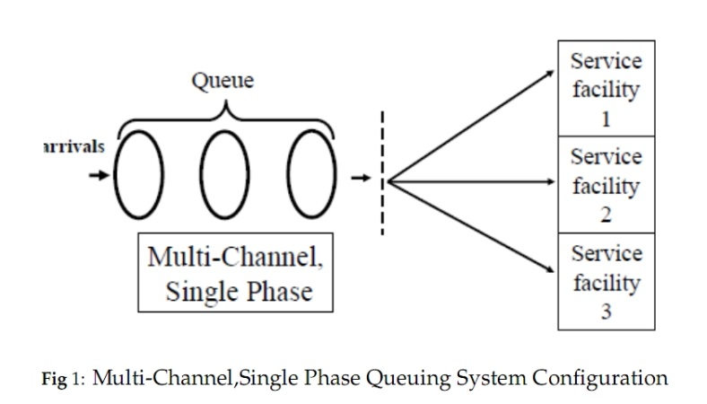
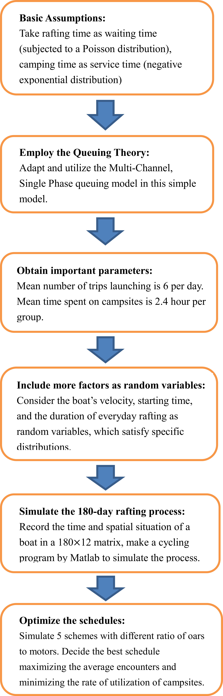
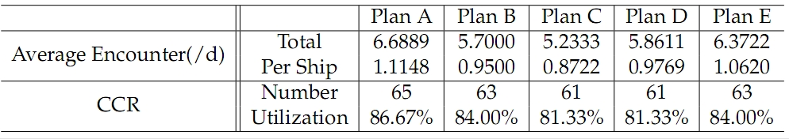

In this paper, in order to select the best schedule of Big Long River rafting during the tourism season, we need to make a linear river rafting model to take different factors into consideration. One is the maximum carrying capacity of the river. Another is the average encounters per day. And the best schedule should include the type of transportation and travel plans. In this problem, we treat the whole process as a stochastic procedure.
Firstly, in order to obtain the number of boats dispatching for a common day, we employ Multi-Channel Single-Phase queuing theory when modeling the system, in which we treat rafting time as waiting time, camping time as service time. As a result, we obtain the average launching times per day.
 Next, with the parameters we get, we consider more factors as random variables, which satisfy specific distribution, such as the velocity of a boat, the duration of every-day rafting, and the starting time of a boat in a day. Then we record the time and spatial situation of a boat in a matrix, and make a cycling program to simulate the day-by-day rafting process.
To optimize the schedule, we consider 5 schemes with different ratio of oars to motors for simulation in hopes of maximizing the average encounters and minimizing the rate of utilization of campsites. Then we compare the results of these schemes and decide the best schedule with half motors and half oars and the average number of encounter in one day of 0.8722 per ship.
We define the carrying capacity of the river as the maximum number of trips of one day in 180 days, and the rate of utilization as the ratio of the carrying capacity to the campsites number Y. After the simulation of day-by-day rafting process and the comparison of those schemes, we conclude that the value of carrying capacity is 63 trips a day, and 867 more boat trips to be added to the Big Long River’s rafting season.
Our model has a lot of strengths: We treat each trip as stochastic procedure, which enable a lot of flexibility to the model; we have definite judgment criteria helping us to screen the best one; we use mature models like queuing theory for simulation. On the other hand, limitations are inevitable. Our queuing system is not closely tally with real case. Our schemes are too limited to find the most desirable one. Also, this model needs more validation from the factual testing.


[1] Randy Gimblett Susan Cherry, Michael J Meitner and Terry Daniel. The Simulation and Visualization of Complex Human-environment Interactions. Landscape and Urban Planning, Volume 54:Pages 63–79, Issues 1-4, 25 May 2001.
[2] Jan W. Van Wagtendonk. The Wilderness Simulation Model. International Journal of Wilderness, VOLUME 9:NUMBER 2, AUGUST 2003.
[3] QIU Rong-xu WU Jing and LI Shan. A Review and Prospect of Agent- based Modeling in Tourism Simulation. Geography and Geo-Information Science, VOLUME 25:NUMBER 5, September 2009.
[4] Ronald E. Borkan Heaton Underhill, Busa Xaba. The Wilderness Use Simulation Applied to Colorado River Boating in Grand Canyon National Park. USA Environmental Management, Vol.10, No.3:pp.367–374.
[5] The Fig of Hikes & Sites of the Canyon. 2011 dates/fares. http://canyonx.com/.
[6] Randy Gimblett and Catherine A. Roberts. Computer Simulation for Raft- ing Traffic on the Colorado River. http://mathcs.holycross.edu/ croberts/RE- SEARCH/GCRTSim/reports.html.
[7] Randy Gimblett and Catherine A. Roberts. Intelligent Agent Modeling for Simulating and Evaluating River Trip Scheduling Scenarios for the Grand Canyon National Park. http://mathcs.holycross.edu/ croberts/RESEARCH/GCRT- Sim/reports.html.
Full Paper: mcm_csy.pdf
If you have any question, please let me know jasminecsy1990 at gmail dot com